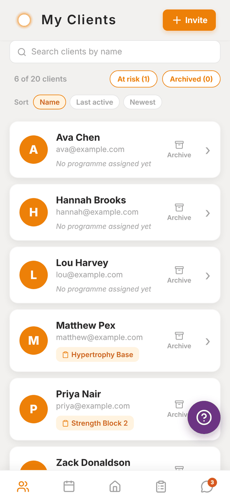
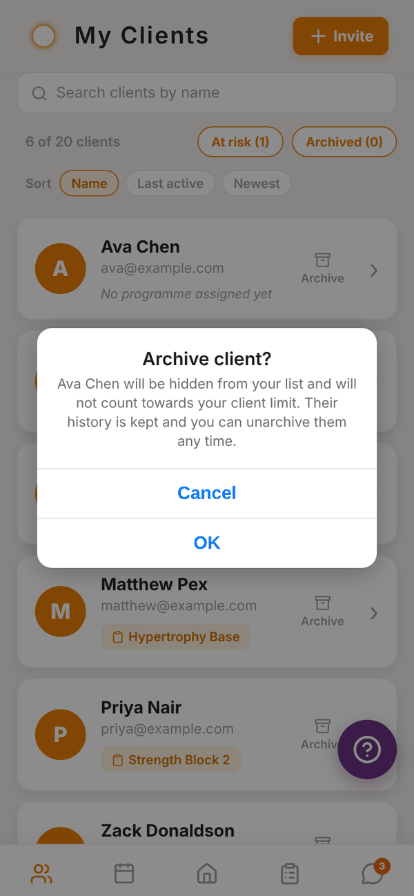
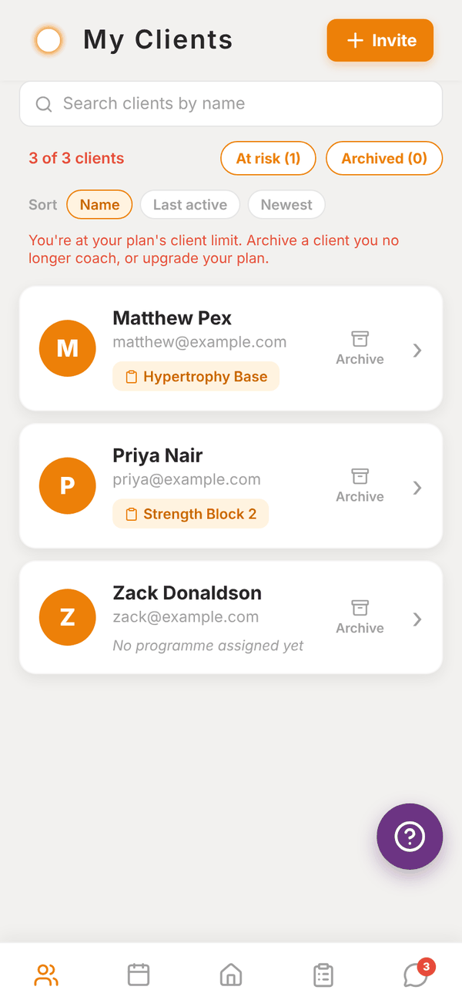

Totality for trainers
Your client list
Search, sort and filter your clients, spot who's at risk, and archive clients you no longer coach.
The Clients tab (titled My Clients) is your whole roster. Tap any client to open their profile. Pull down to refresh.

What each row shows#
- Name and email.
- The programme they're on, or "No programme assigned yet".
- An Archive button on the right.
At the top you see how many clients you have against your limit, for example "6 of 20 clients". At the limit the count turns red and a note explains how to make room.
Search, sort and filter#
- Search clients by name filters as you type.
- Sort: Name, Last active or Newest (most recently added first).
- At risk shows only clients with no app activity for 14 days or more. The number in brackets is how many.
- Archived switches to your archived clients.
Archive a client#
Archive clients you no longer coach. They stay in your history, and they stop counting towards your client limit.
- Tap Archive on the client's row.
- Read Archive client? and confirm.
To bring someone back, tap Archived, then Unarchive on their row. Unarchiving counts them again, so it won't work if you're already at your limit.


Archived clients drop off Home, Check-ins, Messages and the programme assign list. Their history is kept.
Removing a client completely#
There's no delete button for clients. Archive them instead. If a client wants their account deleted, they can do it themselves from their own Settings, or email admintotality@gmail.com.
Questions#
Does archiving tell the client?
No. Nothing is sent to them.
Can an archived client still log in?
Yes. Their account still exists. Archiving only removes them from your active roster.
Why is someone "At risk" when I saw them at the gym this week?
At risk uses the last time the client was active in the Totality app. A client who trains with you in person but never opens the app shows as at risk after 14 days. Clients who have never been active in the app also show here.
At a gym, why does the limit look bigger than my client count?
Gym trainers share the gym's limit, which counts members across the whole gym, not just your clients.